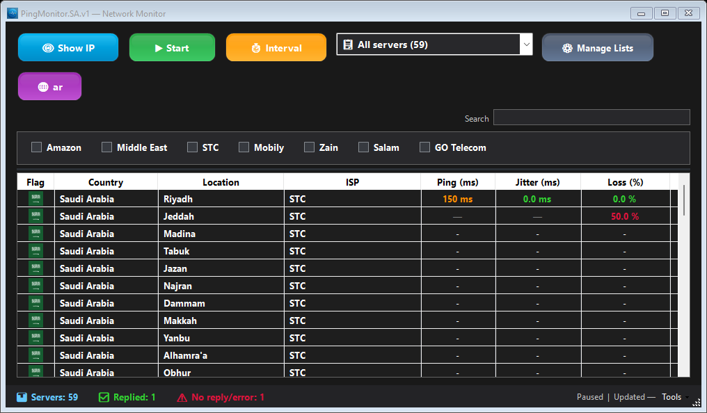

PingMonitor.SA.v1 — أداة مراقبة البنق
التحديث 1.3.0حمّل الحزمة وفك الضغط ثم شغّل PingMonitor.SA.v1.exe. تُحفظ قوائمك داخل بيانات المستخدم تلقائيًا.
تطبيق ويندوز لقياس البنق وتذبذب التأخير وفقد الحزم لخوادم متعددة، مع دعم لغتين وعرض أعلام الدول وفرز النتائج.
⬇️ آخر إصدار منشور 📦 صفحة الإصداراتالمزايا
- قياس البنق بشكل دوري مع ألوان دلالية
- حساب تذبذب التأخير (Jitter) وفقد الحزم (Loss)
- تبديل اللغة عربي/إنجليزي
- أعلام الدول وشريط مزوّدين قابل للتصفية
- إنشاء قوائم مراقبة مخصصة واختيار خوادمها حسب المزود أو المنطقة
- بحث وفرز رقمي وتفاصيل الخادم مع رسم وتصدير CSV
- استيراد وتصدير القوائم مع معاينة قبل الدمج
- ملخص الجلسة وتنبيه اختياري بعد ثلاث محاولات ICMP بلا استجابة
- دعم تكبير العرض وخيار تقليل الحركة
- أزرار حديثة بواجهة متدرجة ودعم الإيموجي
المتطلبات
- .NET Framework 4.7.2
- ويندوز 10 أو أحدث
إن لم يكن .NET 4.7.2 مثبتًا، ثبّته أولًا ثم شغّل البرنامج.
طريقة الاستخدام
- بعد التشغيل، اختر مزوّد الخدمة من الشريط العلوي
- راقب البنق وتذبذب التأخير وفقد الحزم في القائمة
- استخدم زر تغيير الفترة لضبط معدل التحديث
- بدّل اللغة من زر 🌐 أعلى اليمين
المصدر
تُحفظ القوائم داخل AppData في بيانات المستخدم. سجل القياسات مؤقت؛ يمكنك تصديره للاحتفاظ به.
لقطات الشاشة
واجهة البرنامج ببيانات عرض توضيحية، وليست قياسات حية.

